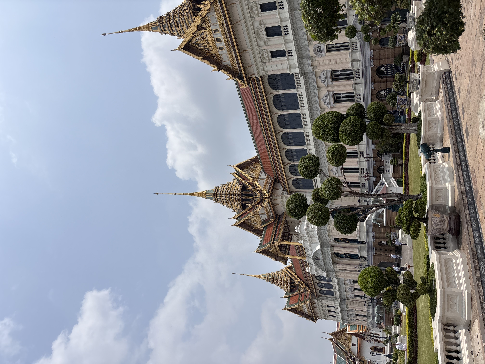
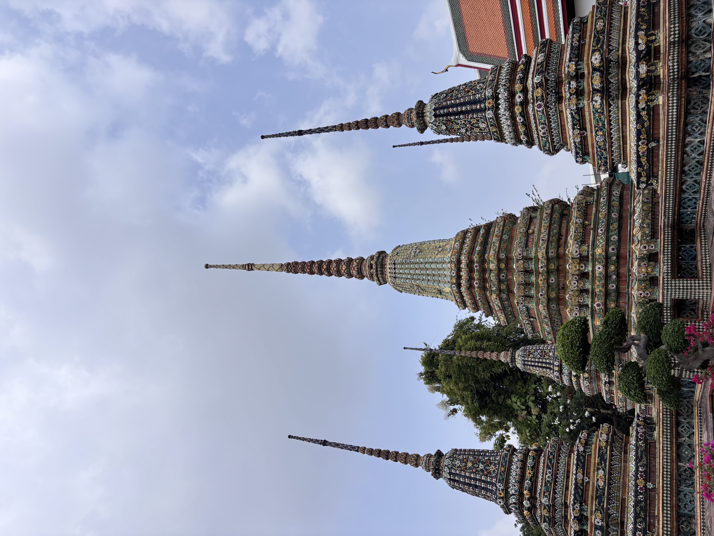
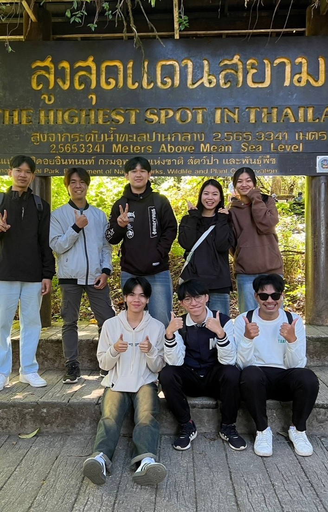

Gallery
รับน้องขึ้นดอย67
รับน้องขึ้นดอน มช เป็นกิจกรรมที่จัดขึ้นเพื่อต้อนรับน้องปี1 เข้าสู่รั้วมหาวิยาลัยเชียงใหม่ ถือเป็นกิจกรรมที่เป็นเอกลักษณ์ของมหาวิทยาลัยเชียงใหม่

พระบรมหาราชวัง
พระบรมหาราชวังซึ่งเป็นสถานที่สำคัญของประเทศไทย มีคนไทยและชาวต่างชาติเข้าไปเยี่ยมชมตลอดทุกวัน และนับเป็นสถานที่ติดอันดับของโลกที่นักท่องเที่ยวจะเข้ามาชม

วัดโพธิ์
วัดโพธิ์ถือได้ว่าเป็นวัดที่มีพระเจดีย์มากที่สุดในประเทศไทย โดยมีจำนวนประมาณ 99 องค์พระเจดีย์ที่สำคัญ พระมหาเจดีย์ประจำพระบาทสมเด็จพระพุทธยอดฟ้าจุฬาโลกมหาราช ซึ่งผมมัโอกาสได้ไปเที่ยวในช่วงปิดเทอม

ดอยอินทนนท์
ครั้งหนึ่งผมได้ไปสัมผัสหมอก ณ ดอยอินทนนท์ ซึ่งถือเป็นจุดสูงสุดของประเทศไทย มีอากาศหนาวตลอดปี